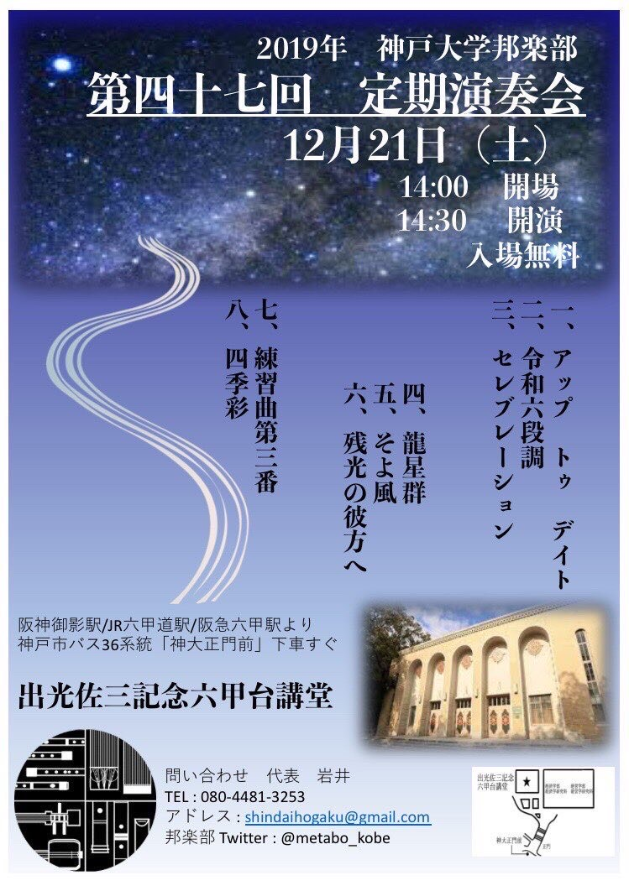

神戸大学邦楽部のホームページへようこそ！
邦楽部は、月・金曜日(祝日除く)に和室（利用可能時間9：00～21：00）で練習しています。
2021年4月現在月・水・金に和室(17:00~20:00)で練習しています！！
楽器体験もやっていますので、ぜひお越しください！！
現在、30名で活動を行っています。
 新入生の方へ
新入生の方へ新歓イベントや楽器の紹介など予定が決定次第告知を行っていますので、
興味のある方はぜひご一読を。
2019年度の定期演奏会の開催は終了しました！
来年の定期演奏会もぜひお越しください！ (追記：2020.07.25)現段階では今年度の定期演奏会は開催予定となっておりますが、新型コロナウイルス感染拡大の影響を受け 延期や中止となることも考えられます。
場所：出光佐三記念六甲台講堂
2019年度の定期演奏会ではご覧の曲目を演奏しました！
一、アップトゥデイト （菊重精峰 作曲）
二、令和六段調 （菊重精峰 作曲）
三、セレブレーション （池上眞吾 作曲）
四、龍星群 （橋本みぎわ 作曲）
五、そよ風 （筑紫歌都子 作曲）
六、残光の彼方へ （水川寿也 作曲）
七、練習曲第三番 （中尾都山 作曲）
八、四季彩 （菊重精峰 作曲）

邦楽部twitter邦楽部の日常を綴っています。
部の雰囲気や活動のようすをお伝えしていきます。
OB･OGの方へ2021/04/05 新歓情報更新
2020/07/25 新歓・定期演奏会等の情報更新
2019/12/01 部員紹介更新
2019/11/30 定期演奏会情報更新
2019/03/23 新歓情報更新
2017/04/15 新歓情報更新
2016/11/04 定期演奏会情報更新
2016/06/11 合宿情報更新
2016/03/15 部員紹介更新
2016/03/13 新歓情報等追加
2016/03/13 掲示板変更
2015/12/25 HP更新
2015/10/06 定期演奏会情報更新